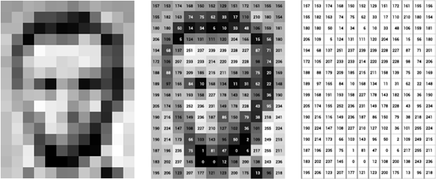
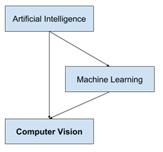
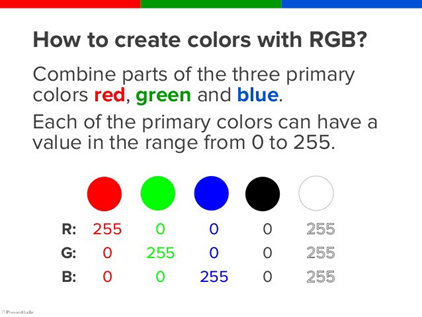

A Visão Computacional é uma ciência que tem como objetivo permitir que robôs, máquinas e computadores possam reproduzir e aperfeiçoar a capacidade humana de ver o mundo real. Essa ciência ainda é considerada recente e imatura, pois o seu estudo mais complexo só teve início ao final da decada de 1970, quando os computadores começaram a suportar o processamento de diversos dados junto a imagens.
Essa área de estudo, do ponto de vista da engenharia, tem como objetivo criar sistemas autônomos e eficientes que possam executar atividades que visão humana consegue executar, e em muitos casos até mesmo superá-la. Alguns exemplos de tais aplicações são: Veículos Autônomos, Amazon Go, Google Lens, Reconhecimento Facial, entre outros. O principal fator por trás de tudo isso é a Computer Vision.
Como funciona:
Diferente da visão biológica, que devido a milhares de anos em desenvolvimento tem a capacidade de reconhecer imediatamente um objeto em 3d, a Visão Computacional precisar analisar cada pixel de uma imagem (ou conjunto de imagens), para conseguir identificar um possível objeto e demais informações dessa imagem.

Dessa maneira, Visão Computacional, assim como outros ramos da Inteligência Artificial, para funcionar perfeitamente trabalha em conjunto com outra área, que neste caso é o Machine Learning. Pois a partir de uma base de dados e de algoritmos o sistema consegue identificar todos os dados das imagens fazendo comparações pixel por pixel com outras imagens já estudadas.

A organização de um sistema de visão computacional é dependente da aplicação. A implementação específica de tal sistema depende também se sua funcionalidade é pré especificada ou se existe alguma parte de aprendizagem durante a operação. Existem,entretanto,funções típicas encontradas em vários sistemas de visão computacional:
• Aquisição de imagem: uma imagem digital é produzida por um ou vários sensores. Dependendo do tipo do sensor, o resultado pode variar entre uma imagem bidimensional, uma cena tridimensional ou ainda uma sequência de imagens.
• Pré-processamento: antes de um método de visão computacional ser aplicado em uma imagem para extrair informação, é geralmente necessário processar a imagem para assegurar-se que ela satisfaz as condições do método.
• Extração de características: características matemáticas da imagem em vários níveis de complexidade são extraídas. Exemplos básicos incluem detecção de bordas, cantos ou pontos. Exemplo sofisticados incluem a morfologia matemática, detecção de texturas, formatos e movimentos.
• Detecção e segmentação: em algum ponto do processo uma decisão é feita sobre a relevância de regiões da imagem para processamento posterior. Exemplos incluem a seleção de regiões de interesse específicos e segmentação de uma ou mais regiões que contém um objeto de interesse.
• Processamento de alto nível: neste ponto a entrada é geralmente um conjunto pequeno de dados. O processo posterior inclui a verificação da satisfação dos dados, a estimativa de parâmetros sobre a imagem e a classificação dos objetos detectados em diferentes categorias.
Sistema RGB:
O sistema RGB (Red, Green, Blue), é o responsável por representar cada valor de um pixel, determinando dessa forma a cor que ele terá. Nesse sistema, cada pixel tem 3 valores numéricos que variam de 0 a 255, quando todas estão nesse máximo o resultado é a manifestação da cor Branca. Assim ocorre no processo inverso, quando todos os valores estão no menor valor , o resultado é a cor preta.A cor de cada pixel é fruto da combinação das cores básicas: vermelha, verde e azul citadas acima onde cada uma dessas três cores possui 256 tonalidades, da mais clara à mais escura, que, combinadas, geram mais de 16 milhões de possibilidades de cores.

Importância e Funcionalidades:
Um sistema de Visão Computacional, quando funcionando em perfeitas condições, tem como grande característica sua rapidez, dessa forma, aquilo que ao ser humano demoraria dias ou semanas a analisar a visão computacional podê-lo-ia fazer em poucas horas. E também compreensão a nível computacional, que é capacidade de fazer o computador compreender o mundo que o rodeia permite a abertura para novas tecnologias em combinação com a visão computacional.
A visão Computacional afeta nosso dia-a-dia em diversas áreas, ela atua principalmente em:
Realidade aumentada: Diversos aplicativos(principalmente mobile),como redes sociais e jogos,utilizam dessa tecnologia para interagir com pessoas e objetos e fazer com que o usuário se sinta imerso em qualquer que seja o seu objetivo.
Pesquisa por imagens: O recurso de fazer uma busca por semelhança de imagens, que com o avanço da tecnologia revoluciona cada vez mais a forma como é possível buscar por conteúdos e conhecimento.
Reconhecimento facial: Essa área foca principalmente em segurança, podendo ser utilizada em diferentes plataformas e equipamentos, tratandotantodesegurançapública,comoomonitoramentodeumaregião, quando segurança privada, como o desbloqueio que um aparelho telefônico.
Robótica: Diversas funções diferentes podem ser desenvolvidas na robótica com o auxílio da Visão Computacional, como por exemplo, permitir que um robô interaja com objetos e pessoas, auxilia no controle de qualidade em uma empresa de produção em massa, pesquisas nos áreas microbiológicas e astrónomas, etc.
Assim conclui-se que, a visão computacional tem tido um crescimento exponencial nestas últimas décadas, acompanhando o desenvolvimento na área de IA e a necessidade humana. Ela interfere diretamente na forma como o mundo tecnológico interage com a sociedade e possibilita diferentes formas de criação de novas tecnologias e estilos de vida.